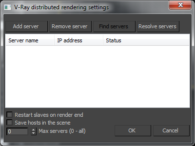
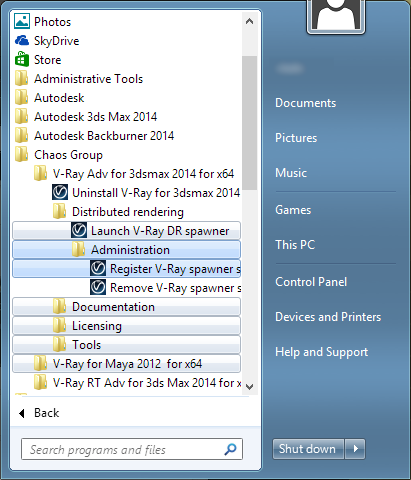

Distributed Rendering
Introduction
Distributed rendering is a technique for distributing a single render job within a single frame across many computers in a network. There are different approaches of doing this, but the main concept is to reduce the render times by dividing different parts of the rendering pipeline and giving each participant different parts of the job. The most common way to do this is to divide the frame to be rendered into small regions (buckets) and give each machine to render a number of them. Then get the results and combine them into the final image.
Organization
V-Ray supports DR. It divides the frame into regions and spreads them across the participants in the distributed rendering. This is done completely through TCP/IP protocol which is the standard protocol of the Internet and thus the most common protocol that is supported by the hardware. V-Ray itself does not need additional file or directory sharing (note that you may actually need some file/directory sharing for the bitmaps or other additional files used during rendering). The distribution management is divided into Render Clients and Render Servers .
Render Clients
The render client is the computer that the user is currently using and from which the rendering is started. It divides the frame into rendering regions and spreads it across the Render Servers. It distributes data to the render servers for processing and collects the results.
Render Servers
A render server is a computer that is part of the so-called render farm - it requests render data from the render client, processes it and sends the result back.
Installation notes
See the distributed rendering section in the install instructions.
If you create a fresh install of 3ds Max on a machine, you will need run at least one Backburner job with this machine as a server, before you can use the machine for distributed rendering.
How to Test
First start with the testing of the render server:
-
Start the vrayspawnerXX.exe program from the Start menu (Start menu > Programs > Chaos Group > V-Ray for 3dsmax > Distributed rendering > Launch V-Ray DR spawner). It will automatically try to find the 3dsmax.exe file and start it in server mode. You should end up with 3dsmax minimized down in the task bar. It should have the title "vraydummy.max". If 3ds Max stays there alive without closing then you have the Render Server part working. If you see the a 3ds Max window flashing on the taskbar and then disappearing, right-click on the V-Ray DR spawner icon in the taskbar tray, select exit to close the DR spawner, and try running a regular Backburner job with this machine as the server. After that, try to start the V-Ray DR spawner again.
Now test the render client:
-
Open your 3ds Max as you normally would.
-
Open a scene you would like to render (preferably a simple one for this test).
-
Choose V-Ray as your current renderer and make sure you have checked Distributed Rendering ON in the V-Ray System section.
-
Press the Settings button in the Distributed Rendering section.
-
Add the machines used for rendering - either with their IP address or their network name and close the dialog.
-
Render the scene as you normally would. You should see the buckets rendered by the different servers.
If Something Fails
Practically every action taken by V-Ray DR is logged. You can find all the log files in the C:\ directory and find out what has failed. If you do not understand the problem, you can compress and send the files to us to analyze them and eventually try to help - vray@chaosgroup.com
If any of the servers fails, you should get a notification and the render client will try to reassign the buckets to another server.
Distributed Rendering Settings
 The Distributed rendering settings dialog is accessible from the System rollout of the renderer settings.
The settings themselves are stored in a text file called vray_dr.cfg, which is located in the 3ds Max plugcfg folder (normally, this is located in the local application data folder for the current Windows user).
Add server - this button allows you to manually add a server by entering its IP address or network name.
Edit server - allows you to change the data about a render server.
Remove server - this button deletes the currently selected server(s) from the list.
Resolve servers - this button resolves the IP addresses of all servers.
Restart slaves on render end - enabling this option will cause the 3ds Max copy on the render slaves to be restarted once a DR rendering is finished. This may help to make distributed rendering more stable.
Save hosts in scene - this option causes V-Ray to store the list of render servers into the 3ds Max scene. This is useful if the scene is later sent to backburner for distributed rendering. In that case, instead of taking the DR servers list from the vray_dr.cfg file on the machine where the backburner server is running, the list will be taken from the 3ds Max scene.
Max servers
-
allows you to limit the maximum number of servers from the list to be included in distributed rendering. When set to
0, all listed servers will be used.
Running the DR Spawner as a Windows Service
You can set the V-Ray DR spawner to automatically run as a Windows service whenever the machine boots up.
Registering the DR Spawner
To register the DR spawner as a Windows service, go to Start menu > All programs > Chaos Group > V-Ray for 3ds Max NNNN > Distributed rendering > Administration > Register V-Ray DR spawner as a service:

Mapped Drives and UNC Paths for Texture Maps and Other Rendering Assets
If you are using mapped drives or UNC paths for your rendering assets, you should set up Log On account for the V-Ray spawner service, otherwise the textures or any other external assets won't be accessible. To set up the Log On account, open the "Services" applet from the Control panel (Control panel > Administrative Tools > Services) and find "VRaySpawner 20XX" service, then with the right mouse click expand the drop-down menu and choose Properties. Go to “Log On” tab and instead the default "Log on as local system account" choose "This account" and put there the account that has adequate privileges on the machine and access to the shared resources over the network.
Alternatively, you can use the automatic asset transfer mechanism of V-Ray as described above to send the required assets from the client machine to the render servers.
TCP/IP Port Numbers
Distributed rendering works over TCP/IP and requires the following ports:
|
Renderer type |
Port number |
Port type |
|
Production renderer |
20204 |
TCP/IP |
|
RT renderer |
20206 |
TCP/IP |
Port 20205 is only used by render servers to broadcast a message that they are ready to join an ongoing DR rendering.
Notes
-
Every render server must have all the plugins and texture maps in their proper directories loaded so that the scene you are sending will not cause them to abort. For example having a PHOENIX plugin used in the scene will cause a server failure in any of the servers that do not have the PHOENIX plugin installed. If you have mapped your object with a file named JUNGLEMAP.JPG and you do not have that map in the BITMAPS directories of the render server installation - you will get bucket rendered at that machine as if the map was turned off, unless you also turned on the Check for missing files option in the V-Ray System rollout, in which case the render server will refuse to render the scene.
-
When you cancel a DR rendering, it may take some time for the render servers to finish working and they may not be immediately available for another render.
-
Default lights are not supported in DR mode and will not render. If you need any lighting in the scene, you should add it explicitly.
-
Transfer missing assets won't work when using Backburner with textures with local paths on the Backburner Server node + DR nodes (textures won't be transferred to the DR machines)